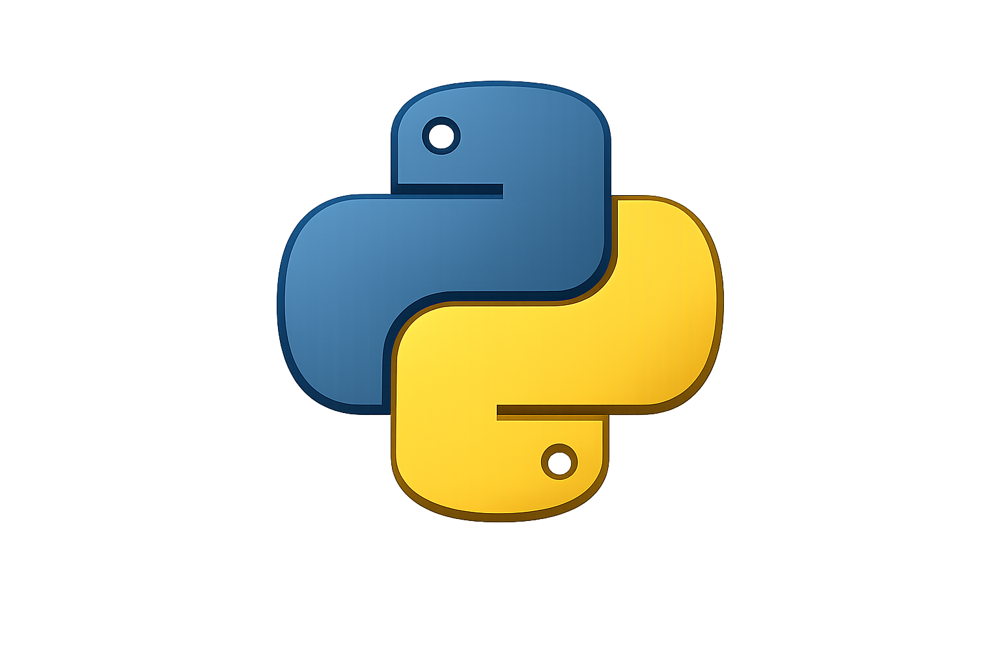

Hola de nuevo. En esta sección hablaremos acerca de Python, uno de los lenguajes de programación más usados a la hora de empezar como aprendices en esta área. A diferencia de otros como JavaScript o C++, su sintaxis es muy comprensible. Si analizamos cada parte y componente que este maneja por separado, podremos garantizar un mayor manejo en su lógica. A continuación se explorará cada parte con sus respectivas explicaciones y ejemplos:

a='hola mundo'
print(a)
Aquí empezaremos por la designación de variables en Python. Dentro de su contexto, cada variable debe tener un nombre (a), una designación en (=) y un valor ('hola mundo'). Para su impresión desde una terminal decodificadora, ya sea desde Visual Studio o cualquier otro programa de este tipo, es importante ver que para ser imprimida correctamente se debe usar el prefijo print(a), al igual que ocurre con console.log() en JavaScript.
numeros=[1,2,3,'hola mundo','adios']
diccionario={
'nombre':'Thomas',
'apellido' :'Romero',
'edad': 34
}
tupla=('hola',1,2,3,'animal','buscalo')
En esta parte, como se vio con el código de ejemplo anterior, se explicará cada componente con su respectiva explicación: numeros=[1,2,3,'hola mundo','adios'] esto es conocido como array o lista en español. Puede albergar cualquier dato, desde números hasta textos en string legibles. Su interior es marcado por posiciones que empiezan desde el 0 hasta el último dato que marque el final de la lista. Cada uno de estos puede ser reemplazado o modificado por funciones externas.
Para el caso del diccionario, este es otro componente que es de suma importancia en Python. Este, al igual que la lista, puede guardar datos tanto numéricos como alfabéticos ('apellido' :'Romero','edad': 34) para después ser alterados si se prefiere así. Pero una diferencia bien definida entre ambos es que el diccionario guarda cada elemento por claves o llaves (keys), las cuales deben ser únicas y no repetirse a diferencia de su valor.
Por último, la tupla. Para su caso, este igual cumple con la condición anterior de guardar datos de diferentes caracteres ('hola',1,2,3,'animal','buscalo'), pero su mayor diferencia es lo que hace que no aplique la gran similitud de los dos anteriores: dentro de cada tupla los datos que se albergan ahí no pueden ser eliminados o reemplazados debido a su inmutabilidad.
edad=int(input('digite su edad:'))
if edad > 18:
print('eres mayor de edad')
else:
print('eres menor de edad')
En esta parte se abarcará una de las últimas sintaxis de variables y el comienzo de la explicación detallada de los bloques con lógica pura: input('digite su nombre:') este tipado nos permite digitar cualquier carácter en string dentro de una terminal para poder darle un valor significativo a una variable.
(int) El carácter int funciona para establecer una única condición: el dato que sea digitado o transferido con este identificador deberá ser únicamente de tipo numérico donde sea que se use, como por ejemplo int(input('digite su edad:')). Únicamente este input aceptará números, dejando afuera el string puro.
En este caso no se explicará una sintaxis de variable o digitación en inputs. Se abarcará el contenido de los condicionales. Estos son funciones de lógica que nos permiten hacer comparaciones con cualquier tipo de dato, ya sea string (texto) o int (numérico). Cada comparación lleva por objetivo llegar a una conclusión que determine el resultado final de la situación presentada. Ejemplo claro: if num > 18: print('eres mayor de edad'). Para este caso el if, que significa “si”, establece si la variable que contiene el número digitado es mayor a 18, llegando a la conclusión de que es mayor de edad, o si no es el caso.
Entrará en juego el bloque else: print('eres menor de edad'). Este término nos sirve para establecer que si la condición anterior no se cumple, establecer claramente que no es mayor de edad. Cada parte de un condicional funciona como una alternativa a algo que no se cumple en un bloque, pero que sí se puede cumplir en otro. Aquí es donde entra en juego otra parte importante de los condicionales a la hora de manejar múltiples alternativas. ¿Pero quién es esta parte?:
nombre=input('digite su nombre:')
if nombre == 'Mateo':
print(f'hola {nombre}')
elif nombre == 'Alejandro':
print(f'hola {nombre}')
elif nombre == 'Thomas':
print(f'hola {nombre}')
elif nombre == 'Martha':
print(f'hola {nombre}')
elif nombre == 'Simona':
print(f'hola {nombre}')
El elif es esa condición que no solo puede abarcar una condición alterna a la del if, sino que cada línea suya puede tener varias conclusiones distintas dependiendo de la condición que se cumpla en cada una. Esto es muy útil a la hora de permitirnos establecer más opciones o alternativas que requieran abarcar más allá del if principal.
if num==1 or num==2:
print(f'este es el numero {num}')
if edad>18 and estudiante == 'si':
print(f'recibira un bono')
Ahora vamos con or. Esta función nos permite alternar entre una hasta dos condiciones una de la otra para poder llegar a una conclusión absoluta. Ejemplo: if num== 1 or num==2: print(f'este es el número {numero}'). Una de las dos condiciones deberá cumplirse para darse el respectivo veredicto, mostrándonos que no es necesariamente obligatorio de que ambas se cumplan para ejecutar algo definitivo. Es así como ocurre todo esto en una sola línea, ya sea de if o elif.
Para el caso de and ocurre todo lo contrario. Esta función no alterna entre dos funciones para ver cuál se cumple y cuál no. Aquí cualquier línea de if o elif que contenga and dejará claro que ambas opciones deben cumplirse para así ejecutar la conclusión exacta, ya que si no es el caso la conclusión definitiva se la dará else. Ejemplo: if edad > 18 and estudiante=='si': print('recibirás un bono'). Ambas condiciones deberán cumplirse para poder recibir el bono; si no, el else marcará 'como no recibirás bono' al usuario. Esto es importante más cuando se requieren manejar restricciones en ciertos sistemas de autenticación.
num=1
while num< 5:
print(f'{num}')
num += 1
En esta parte se explorará una nueva función de código que se denomina while. Este nos permite crear bucles en una determinada condición verdadera que se debe cumplir para que se pueda llevar a cabo. Esto tenemos el ejemplo de arriba: la variable num empieza desde 1 y la condición exacta del while nos dice que mientras num sea menor a 5 este podrá imprimirse, en este caso por print. Pero es aquí donde entra el operador de asignación aumentada (num +=1): para que la variable aumente es necesario ir sumándola de 1 en 1, tal y como se muestra en el ejemplo.
Es así que después de que la variable va aumentando, la variable de num va aumentando de 1 a 2, luego 3, 4 y al llegar a 5 el bucle se detiene por completo porque al final el número ya es igual a 5, dándose por terminado el proceso.
while True:
tu = input('ingrese su mensaje:')
if tu == 'hola':
print('hola como estas en que te puedo ayudar?')
elif tu == 'hml':
print('el html es un lenguaje de enmaquetado')
elif tu == 'como estas?':
print('estoy bien y tu?')
elif tu == 'igualmente gracias por preguntar':
print('soy kay una ia decente mejor que tu beyaco')
elif tu == '2 +2':
print('la respuesta es 4')
elif tu == 'adios':
print('ok hasta pronto')
break
Seguimos con while True. En este caso no se tratará simplemente de un bucle que cierra simplemente por una condición fija, sino todo lo contrario. Aquí el ciclo es infinito hasta cierto punto, ya que hay un campo de condiciones más variados para mantener todo en pie. En primera instancia tenemos como principal diferencia de que este while debe ser puesto desde el inicio de todo para cubrir todo desde su interior. Esto ocurre mientras frente a él lo acompaña el atributo True, que como su significado lo dice: en donde este se encuentre, todo lo que hay a su alrededor es verdad hasta cierto punto.
El ejemplo de arriba se centra como tal en un chatbot de prueba que responde respuestas de acuerdo a las condiciones establecidas en los condicionales if y elif. Cada línea de estos ofrece una respuesta diferente con respecto a lo que se le escriba, incluso si lo que se digita no está en la lista de los condicionales. El ciclo puede continuar infinitamente hasta que escribamos adiós, la cual marca el punto de final de la travesía con un atributo nunca antes visto.
atributo: (break) Este nos sirve para marcar el final de un ciclo, ya sea finito o infinito, esto a través de una condición en general que en todo caso se llegue a dar en el proceso para marcar el final del mismo si ya no se desea continuar. Este como tal puede ser usado en diferentes bloques de lógica, ya sean dentro de un while True o dentro de un for, el cual hablaremos de él más adelante.
for i in range(1,6):
print('hola')
Esta última función de lógica es denominada como for. Esta se encarga de recorrer un rango determinado desde un punto a otro, tal y como se ve en el ejemplo. La variable i es el marcador que recorrerá el rango establecido en el range, una propiedad que consiste en marcar cada marcador de punto de partida hasta uno final. Dentro de sí marca el inicio desde 1 hasta 6, pero es aquí donde entra el engaño principal que confunde a todos los aprendices de este lenguaje como tal. Pareciera que el punto final del recorrido fuera el que se estipula en el range, pero como tal el verdadero punto final es el 5, ya que el 6 es solo para establecer que el recorrido debe terminar antes de llegar a 6, en este caso en 5. Es así que siguiendo con esa misma lógica, lo que el print de abajo imprimirá en la terminal no son 6 hola sino 5 hola, ya que ese es el límite al que se debe imprimir antes de llegar a 6.
El for no solo sirve para imprimir una cantidad de veces un dato en específico, también nos permite meternos en ciertas estructuras de datos como lo son arrays, tuplas o diccionarios. Esto con el objetivo de recorrer cada uno y mostrar lo que hay en su interior. Es aquí se mencionará un dato importante con respecto a estas estructuras definidas: cada una siempre empezará marcando la posición de cada elemento desde el 0 en adelante. Así es como el for al momento de recorrerlas empezará desde la posición 0 de cada una hasta terminar con el último número de cada una.
numeros=[1,'hola mundo',3 ,4 ,'salir',10]
for i in numeros:
print(i)
ejemplo de posiciones en estructuras de datos
numeros=[1,'hola mundo',3 ,4 ,'salir',10]
print(numeros[0])
Además de hacer de las funcionalidades anteriores, como ya se había mencionado anteriormente en la explicación del while, el break también puede usarse directamente en esta función de lógica. Esto también a la hora de interrumpir el recorrido del range, igual que se hace con el ciclo infinito del while True. Esto se puede lograr desde un punto en específico. Por ejemplo, si ponemos un range de (1,11) exactamente el recorrido deberá terminar en 10 antes de llegar a 11, pero aquí está el truco: esto solo puede ser directamente factible si manejamos condiciones exactas para que termine ahí. En este caso se podría hacer con if, tal y como se muestra en este ejemplo:
for i in range(1,11):
dato=input('escribe loq ue quieras:')
if dato == 'salir':
break
Y como se puede ver en el ejemplo de arriba que muestra el uso de break en for, es muy simple de lograr, pero con condiciones necesarias que hay que tener en cuenta para su respectivo uso, como lo es en el caso de usarlo cuando haya más de una condición y se traten de manejar operadores lógicos como if, elif o else para poder marcar alternativas que marquen ya sea el fin del proceso o una ruta alterna para proseguir.
Es indispensable seguir avanzando en la práctica de este lenguaje para poder manejar más funciones y conceptos necesarios para una gran dominancia del mismo. Invito a aquellos que quieran seguir aprendiendo más de esta área a leer cada una de las secciones, esto para poder entender muy bien desde su propio punto de vista esta área.